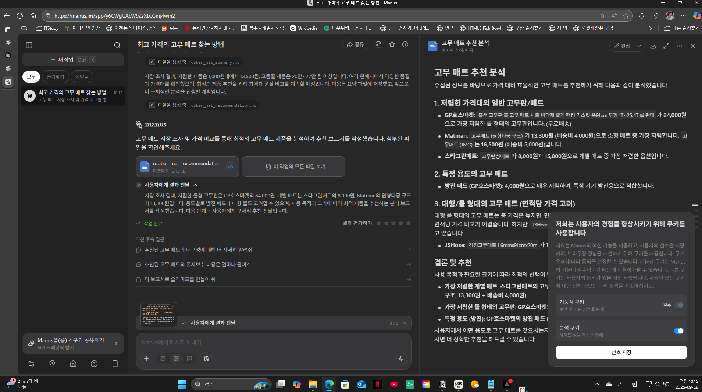
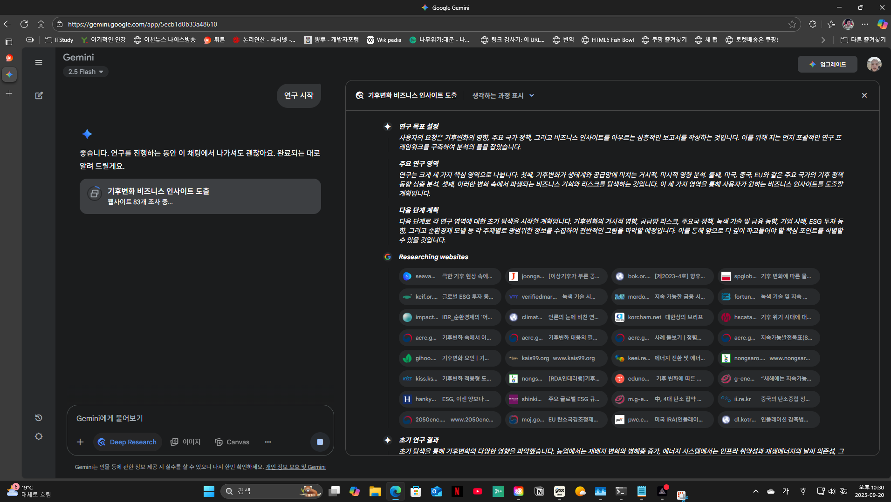
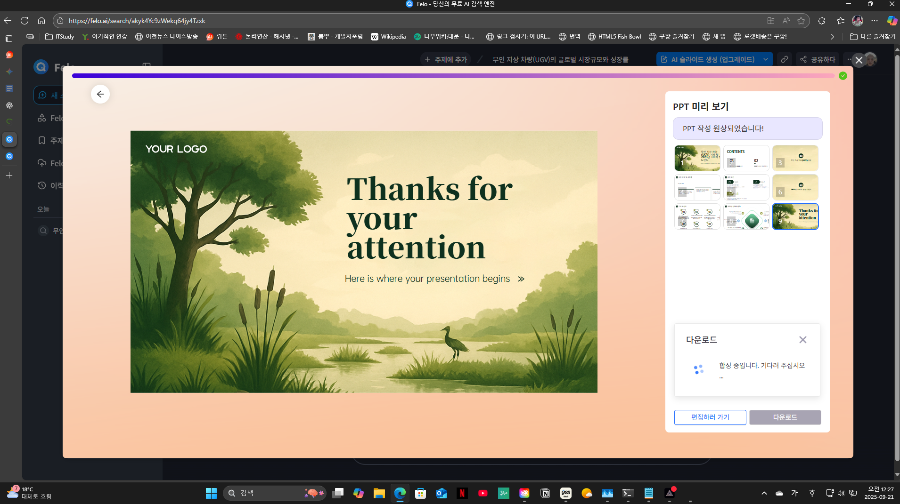
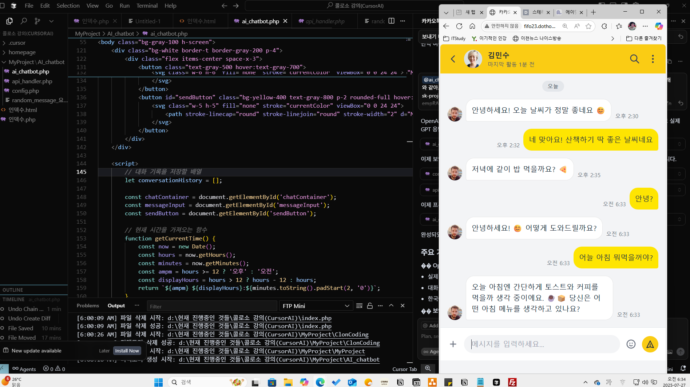
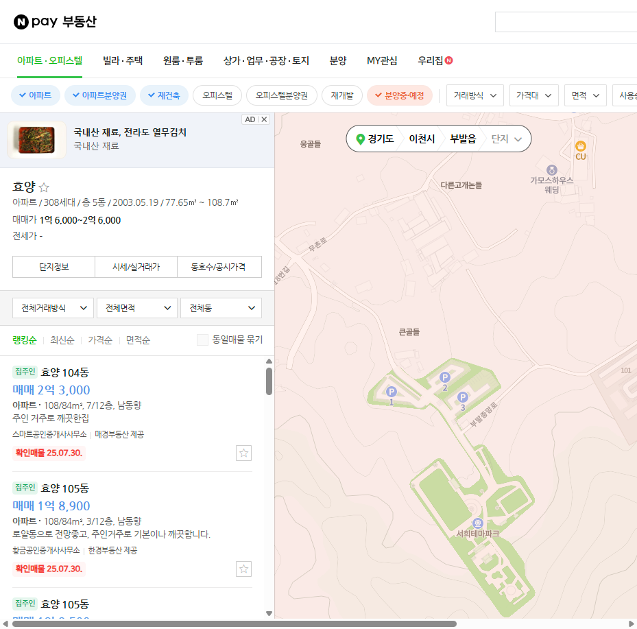
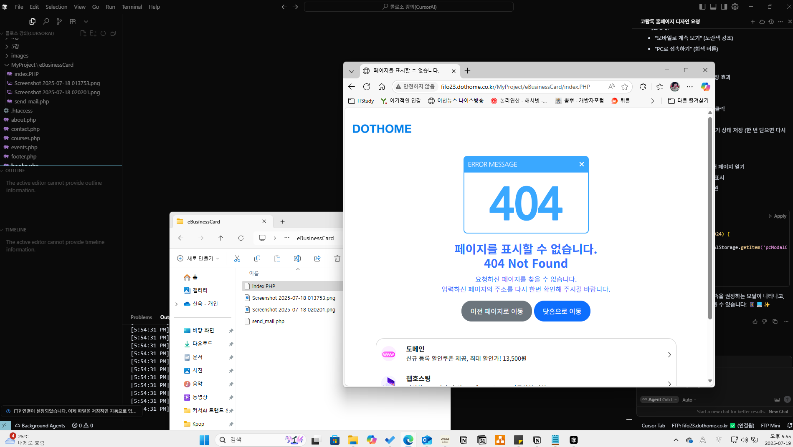

PROJ_09 · 폴더 안 날짜 2025년 7월 16일–8월 5일
커서로 따라 만든 프로그램
『커서 AI 트렌드&활용백과』를 읽으며 만든 MyProject와, 콜로소 Cursor 강의로 만든 회사 사이트·사과 게임·포트폴리오가 한 폴더에 있습니다. 필기는 PROJ_09_add_doc에서 같은 폴더 이름 뒤에 _add_doc를 붙여 둘로 나뉘어 있습니다.
추가 학습 자료
문서 폴더 이름을 프로젝트 폴더와 맞춰 두었습니다. 책 본문과 붙여 넣은 HTML은 옮기지 않았습니다. 키, 비밀번호, 받은 메일 주소도 이 페이지에 적지 않았습니다. 철자는 파일에 있는 그대로입니다.
책 폴더와 같은 이름의 add_doc
프로젝트 폴더는 「커서 AI 트렌드&활용백과 비전공자를 위한 바이브 코딩 입문서 읽으며 만들어본 프로젝트」입니다. 그 안의 MyProject에 할 일, 챗봇, 메일, 사과 페이지, 게시판, 카드뉴스, 크롬 확장, 클론 코딩, 언론 크롤, 두더지, 전자명함, 파일 분류, 팝 차트, PDF, 견적, 리뷰, 매출, 단어 빈도, 설문, 단어 카드가 있습니다. 파일 분류 폴더 이름에는 중간 코드가 빠졌다고 적혀 있습니다.
짝이 되는 문서 폴더 이름은 그 뒤에 _add_doc가 붙습니다. 들어 있는 파일은 독서노트와 실습 통합 docx, 뤼튼 요약 docx, 학습 보고서 pdf와 pptx, 노트를 이어 붙인 docx, OpenAI 실습 정리 docx, 그리고 「AI에이전트 브랜드&활용백과 - 강의노트」입니다. 이어 붙인 파일 이름은 에전트, 백과로 적혀 있고, 강의노트 폴더 이름은 브랜드입니다. 독서노트 요약을 정리할 때 뤼튼을 사용했습니다. 실습 정리를 할 때 OpenAI를 사용했습니다.
파트 1–2. 오퍼레이터, 컴퓨터 유즈, 퍼플렉시티, 젠스파크, 펠로, 노트북LM, 마누스, 갤럭시 AI, 애플 인텔리전스입니다. 마누스에 고무 매트 대시보드를 요청하고 게시한 주소가 적혀 있습니다. 파트 2는 사람과 AI의 역할, 가트너 전망, 미드저니, 일레븐랩스, 캔바입니다. 날짜는 2025년 9월 17일 오후 1시 25분입니다.
파트 3–4. OpenAI 작업 예약, 건강·영어·업무 알림 예시, 클로드 컴퓨터 유즈, 젠스파크의 여러 모델 교차 검증, 제미나이 2.5 플래시 딥 리서치입니다. 교차 검증만 믿지 말고 출처를 확인하라고 적혀 있습니다. 철자 「플레시」가 강의 캡처 파일 이름에 있습니다.
파트 5–8. 펠로로 검색, 마인드맵, PPT, 펠로 문서를 만듭니다. 노트북LM은 올린 자료만 보고 출처를 붙인다고 적혀 있습니다. 파트 8은 직장에서의 에이전트, MCP, 구글 A2A입니다. 날짜는 2025년 10월 2일 오전 12시 4분입니다. 강의노트 png 19장 가운데 마누스, 제미나이, 펠로 화면을 아래에 넣었습니다.



콜로소 폴더와 같은 이름의 add_doc
프로젝트 폴더는 「콜로소 강의(CursorAI) 진행한 프로젝트」입니다. 그 아래 「프로젝트(회사사이트 만들기, 사과게임, 포트폴리오사이트)」에 homepage 1–15강이 있습니다. 강 기록은 FTP로 올린 파일을 고치고, 프롬프트로 소개 페이지를 수정하는 내용입니다. 뒤 강은 도메인, 호스팅 비용, 광고와 결제 모듈을 강의 순서로 적습니다. 14강 노트는 정식 서비스로 올릴지 아직 고민이라고 적혀 있습니다. lotto 폴더에 homepage가 한 벌 더 있습니다. 폴더 이름 potpolio가 있습니다.
짝이 되는 문서 폴더도 같은 이름에 _add_doc가 붙습니다. 프롤로그, 1장, 2장, 3~4장, 5장, 6장, 7장, 8장, 부록, MyProject가 들어 있습니다.
프롤로그. 「창의적 게으름」이라고 적혀 있습니다. 문제를 정의하고 해결책을 구상하는 일에 집중하고, CursorAI로 일상의 효율을 높인다고 적었습니다.
1장. 「슈퍼 개인의 시대, 커서 AI 열어갈 세상」입니다. 윅스, 버블을 「미리 만들어진 볼록 조립」이라고 적고, 「솔로플리너」와 「프롬프트 엔제니어링」이 있습니다. 책의 진행 모델은 클로드 소네트 3.5입니다. 레플릿에 한글 블로그를 요청한 뒤 startbuilding을 누르고, 실제 사용에는 전문적인 부분이 더 필요하다고 적었습니다. 「프로그래시브 웹앱」도 쉬울 것 같다고 적었습니다. codebase 검색, 에이전트, 「클라우드 플레어에 있는 AI」 일화가 있습니다.
2장. K-팝 HTML, 파란색으로 「예브게」 바꾸기, Restore Checkpoint, 테일윈드, 「레아웃겔러리」, 글래스모피즘, 위키미디어 국기, 페이드 인입니다. @ 뒤에 Web, 파일, 폴더, 깃허브를 고릅니다. 미국·영국·일본·라틴 팝 navbar를 만들고, 라틴 팝의 국기 대신 위키백과 「콩가」를 넣습니다. 철자는 「링그」, 「잘못가져왓」, 「휍사이트」, 「저작원정보」입니다. 한글이 깨지면 깨진 글자를 복사해 수동으로 고칩니다. 닷홈 무료 호스팅과 ftpmini로 index에 「안녕하세요」를 올리면 fifo23.dothome.co.kr에 그 문장이 나온다고 적었습니다. 철자는 「ftpif」입니다.
3~4장 명함. 첨부 사진과 비슷하게 PHP 명함을 만들고, 이름을 홍길동, 상단을 활빈당으로 바꿉니다. 비디오는 한 행 3열이고 주소는 zbmyJJqAc9g, x3b0lEQpiCU, JrysRTN2gCw입니다. 메뉴는 소개, 약력, 프로젝트, 연락과 Font Awesome입니다. Books 6권의 표지는 Picsum, castlink, Pixabay 순으로 시도한 뒤 처음 방식으로 restore했다고 적었습니다. Projects는 2행 4열입니다. 철자는 「Pjojects」입니다. Contacts는 구글 맵을 붙입니다. 연락 폼 노트는 보낸 사람 주소를 위조할 수 있다고 적고, 메일 주소와 전송 코드는 이 페이지에 없습니다. 명함 캡처에도 받은 메일 주소가 보여 그 그림은 넣지 않았습니다.
3~4장 사과. 쪽수 p305. 붉은 계열 랜딩, placehold.co, Black Han Sans, 파비콘, 햄버거 메뉴, 모바일 문구 「모바일에서도 주문가능합니다」, include입니다. 철자는 「파피콘」, 「서줘」, 「곹오기능」, 「이베이지」입니다. 홈을 index.php로 연결하는 요청은 해결되지 않았다고 적었습니다.
할 일·설문·게시판·SNS. 쿠키, 로컬스토리지, 세션 스토리지를 비교합니다. 철자는 「폼재」, 「템」, 「기록된 용이」, 「위족」입니다. 할 일은 월 달력과 날짜별 개수 배지입니다. 설문은 식당 평가 survey.json과 Result 폴더입니다. 관리자 로그인 예시는 노트에 있고 값은 적지 않습니다. 게시판 철자는 「웹 게시판ㄴ」입니다. Navy Blue, 위지윅, localhost의 fifo23 데이터베이스가 적혀 있고 비밀번호는 적지 않습니다. 같은 폴더에 게시판 테이블 메모와 해시 생성 메모가 있습니다. 해시와 SQL은 옮기지 않았습니다. SNS는 인스타그램 클론이고 철자는 「데이자인」, 「회웍나입」, 「발로워」입니다. 관리자 아이디 fifo23이 example.com 주소로 들어갔다고 노트에 적혀 있습니다.
5장. 「카카오톡 채팅팡」입니다. 소제목 철자는 「읨의의메시지」입니다. 프로필은 randomuser.me이고, 응답 모델은 GPT-4o입니다. 노트는 키를 프롬프트에 붙인 뒤 별도 PHP로 옮기라고 고칩니다. 키 값은 없습니다. 사용자는 김민수, 상대는 20대 남성 동현입니다. 이전 대화를 함께 보내 맥락을 유지합니다. 이어서 AI 이메일 작성기와 「수산인」 입력칸, 콘솔 오류를 붙여 고치는 기록이 있습니다.
6장. 한국은행 보도자료는 PDF URL만 CSV로 모으고, 기간과 최대 30개를 적습니다. 철자는 「피이지」, 「캠처」입니다. 네이버 부동산 노트에 붙인 단지정보는 경기도 이천시 부발읍, 건설사 효양, 308세대입니다. 부발읍 지도 좌표는 37.283663, 127.486718입니다. 첫 단지만 되고 둘째부터 실패한 기록과 세대순 상위 10개 요청이 있습니다. 철자는 「세댓구」, 「정모」, 「정령」입니다. 매출 파일은 company_sales_rawdata.xlsx이고 지점 순서는 서울, 「인」, 부산, 대구, 광주입니다. 지점별 합계가 잘못 계산되었다고 적었습니다. 시각화 시트에 막대, 선, 원 그래프를 요청합니다.
7장. 유튜브 자막은 youtube-transcript-api와 watch?v=YYba51PFNZA입니다. 철자는 「스클빝트」, 「GTP-4o」입니다. 접근이 거부되어 어떻게 되는지 잘 모르겠다고 적혀 있습니다. 리뷰는 yes24 상품 146828537, 「엔디비아」 세트이고 감정은 긍정, 부정, 알 수 없음입니다. PDF는 world_economic_outlook_2025.pdf를 워드와 pptx로 요약합니다. 제목 철자는 「만드릭」입니다.
8장. hwp 견적은 gethwp와 GPT-4o로 읽고 txt와 zip으로 남깁니다. 2025-08-04 18:56 종합 파일의 세 금액은 쿠록스 6,600,000원, 라이쿠 4,400,000원, 코난 6,050,000원이고 셋 다 보통입니다. 같은 파일의 합계 6,050,000원, 평균 2,016,667원은 세 금액의 합과 다릅니다. 파일 정리는 문서, 그림, 음악, 영상, 소스 코드, 기타와 old 폴더, date_sort.py의 tkinter 달력, recovery.py입니다. main.py가 겹치다 빈 파일이 된 것 같다고 적었습니다. 카드뉴스는 DALL-E와 bill_gates_cardnews.json, tkinter 폼입니다. 크롬 확장은 보이는 화면 뒤에 긴 화면을 찍고, 스크롤바와 「플룅」 요소가 반복되는 문제를 적습니다.
부록과 MyProject 프롬프트. Cursor Rules는 전역 User Rules와 프로젝트 .cursorrules입니다. index 메모는 apples.php와 k-pop.html입니다. 두더지는 3x3, 30초, 보스 100, 정예 70, 일반 50입니다. 단어 카드 파일 이름 철자는 csvt입니다. 단어 빈도는 상위 100개를 가나다순과 abc순 두 그래프로 그립니다.
폴더 안 스크린샷
책 프로젝트 MyProject와 콜로소 강의 캡처입니다. 파일 이름에 찍힌 날짜 그대로입니다. 강의 샘플로 저장된 인물 소개 이미지는 실행 화면으로 넣지 않았습니다.




간단 설명
할 일 화면은 todolist.PHP이고, 챗봇은 ai_chatbot.php와 api_handler.php입니다. 게시판은 글 목록, 보기, 쓰기, 수정, 삭제가 나뉘어 있고, 클론 코딩 폴더에는 회원 가입과 글쓰기 PHP가 있습니다. 설문은 응답 페이지와 관리, 통계로 나뉩니다.
파이썬 쪽은 리뷰 감정 차트, 매출 피벗 차트, 카드뉴스, PDF를 읽어 슬라이드와 대본을 만드는 스크립트, 견적 파일 분석, 파일 분류입니다. 리뷰와 매출 폴더에는 png 차트가 이미 들어 있습니다. 파일 분류용 샘플 폴더의 필기 사진 묶음은 화면 캡처로 세지 않았습니다.
사용 도구
-
Cursor
책 실습과 콜로소 강의 폴더가 Cursor 작업으로 남아 있습니다. 캡처에도 Cursor 창이 보입니다.
-
PHP · HTML
할 일, 챗봇, 게시판, 설문, 전자명함, 단어 카드가 PHP 페이지입니다.
-
Python
리뷰, 매출, 카드뉴스, PDF, 견적, 크롤, 파일 분류 스크립트입니다.
-
JavaScript
챗봇 화면의 대화 시각과 크롬 확장, 회사 사이트 애니메이션 스크립트가 있습니다.
-
뤼튼 · OpenAI
책 폴더의 add_doc에서 독서노트 요약을 정리할 때 뤼튼을 사용했습니다. 실습 정리를 할 때 OpenAI를 사용했습니다.
실행 환경
핵심 기능
| 기능 | 하는 일 |
|---|---|
| 할 일 달력 | 날짜를 고르고 할 일을 로컬 스토리지에 남깁니다. 달력에 개수 배지가 있습니다. |
| 챗봇 | 카카오톡처럼 보이는 화면에서 GPT-4o 응답을 받습니다. 키는 별도 PHP에 둡니다. |
| 게시판 | 글 목록, 쓰기, 수정, 삭제, 댓글과 대댓글입니다. |
| 차트 | 리뷰 감정과 지점별 매출을 png로 남깁니다. |
| 파일 분류 | 확장자, 분류, 날짜로 옮기고 recovery.py로 되돌립니다. |
파일에서 이은 기록
- readme 감의 내용전체나 책 전체 자체가 하나하나다 프로젝트임.
- 문서 분류 PROJ_09_add_doc 바로 아래에는 프로젝트 폴더와 같은 이름에 _add_doc를 붙인 폴더 두 개만 있습니다.
- index 메모 apples 프로젝트는 apples.php, Kpop 프로젝트는 k-pop.html로 저장했다고 적혀 있습니다.
- 접속 값 PHP 설정과 .env, token.json에 접속 값이 있습니다. 그 값은 이 페이지에 적지 않습니다.